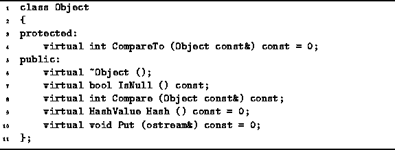
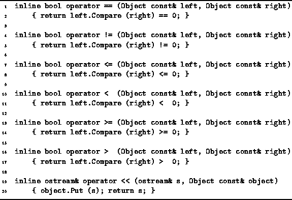

Data Structures and Algorithms
with Object-Oriented Design Patterns in C++
Data Structures and Algorithms
with Object-Oriented Design Patterns in C++
The abstract class at the top of the class hierarchy
is called Object.
With the exception of the Ownership class,
all the other classes in the hierarchy are derived from this class.
Program  gives the declaration
of the Object class.
Altogether only six member functions are declared:
the destructor, IsNull, Hash, Put,
Compare and CompareTo.
gives the declaration
of the Object class.
Altogether only six member functions are declared:
the destructor, IsNull, Hash, Put,
Compare and CompareTo.

Program: Object Class Definition
The Object class destructor is declared virtual. It is essential to declare it so, because the Object is an abstract class, and instances of derived class objects are very likely to be accessed through the base class interface. In particular, it is necessary for the destructor of the derived class to be called through the base class interface--this is precisely what the virtual keyword achieves.
The IsNull function is a pure virtual member function
which returns a Boolean value.
This function is used in conjunction with the NullObject
concrete classes described below in Section .
The IsNull function shall return false for
all object instances derived from Object
except if the object instance is the NullObject.
We will see later that certain functions return object references.
For example, a function which searches through a data structure
for a particular object returns a reference to that object if it is found.
If the object is not found,
the search returns a reference to the NullObject instance.
By using the IsNull function,
the programmer can test whether the search was successful.
This is analogous to the NULL pointer in the C
programming language and to the pointer value 0 in C++.
The Hash function is a pure virtual member function
which returns a HashValue.
The Hash function is used in the implementation of hash tables
which are discussed in Chapter .
We have put the Hash function in the Object class interface,
so that it is possible to store any object derived from Object
in a hash table.
What the Hash function computes is unspecified.
The only requirement is that it is idempotent .
I.e., given an object instance obj,
obj.Hash() does not modify the object in any way,
and as long as obj is not modified in the interim,
repeated calls always give exactly the same result.
Two functions for comparing objects are declared--Compare
and CompareTo.
Compare is a public member function.
that takes a const reference to Object and returns an int.
Given two objects obj1 and obj2,
calling obj1.Compare (obj2) compares
the value of obj1 with the value of obj2.
The result is equal to zero if  ;
less than zero if
;
less than zero if  ; and,
greater than zero if
; and,
greater than zero if  .
.
It is not necessary that the two objects compared using Compare
have the same type.
As long as they are instances of classes derived from Object,
they can be compared.
The Compare function is used
in the overloading of the comparison operators
operator==, operator!=,
operator<, operator<=,
operator>, and operator>=,
as shown in Program .
The second comparison function, CompareTo, is a pure virtual function. An implementation for this function must be given in every concrete class derived from Object. The purpose of this function is to compare two objects that are both instances of the same derived class.
The purpose of the Put member function of the Object
class is to output a human-readable representation of the object
on the specified output stream.
The Put function is a pure virtual function.
However, since it has the side-effect of output,
it is not strictly idempotent.
Nevertheless, it is a const member function
which means that calling the Put member function does
not modify the object in any way.
The use of the Put in the overloading of the ostream
insertion operator, operator<<,
is shown in Program .

Program: Object Operator Definitions
The use of polymorphism in the way shown gives the programmer enormous leverage. The fact almost all objects will be derived from the Object base class, together with the fact that the Put and CompareTo member functions are virtual functions, ensures that the overloaded operators work as we expect for all derived class instances.
 Copyright © 1997 by Bruno R. Preiss, P.Eng. All rights reserved.
Copyright © 1997 by Bruno R. Preiss, P.Eng. All rights reserved.